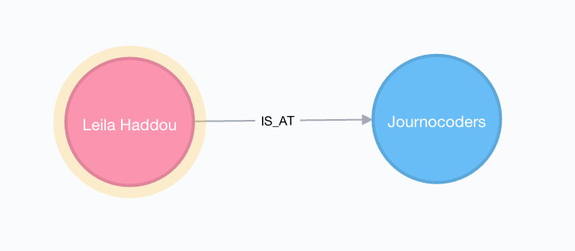
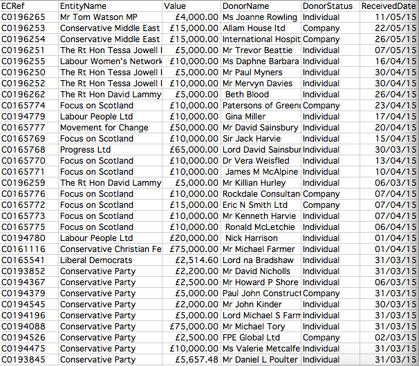
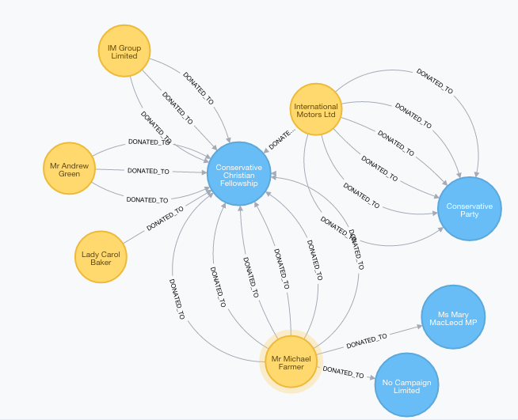
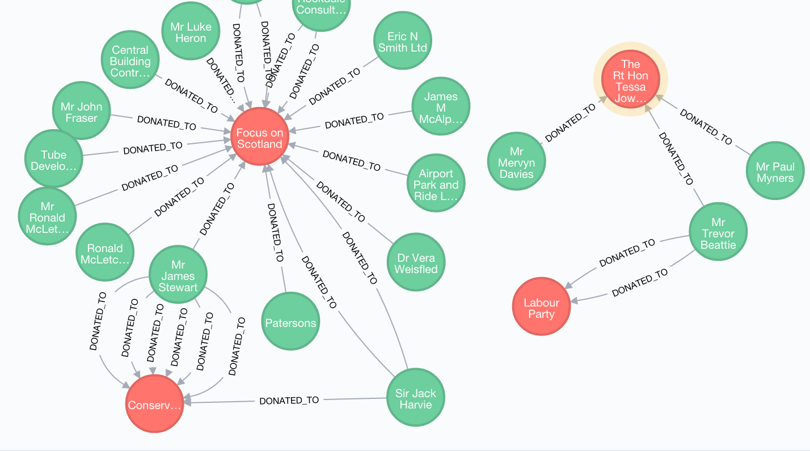

Exploring networks with graph databases
A journalists' introduction to Neo4j
What is a graph database?
In data journalism, we tend to use relational database - data in table form - such as excel or Google docs or SQL, to do our analysis and find stories.
Graph databases are different, but they are incredibly useful tools to find connections or patterns within our data that would be difficult, if not impossible, to spot using a relational database. It could be used for:
Examining social networks
Tracking the flow of money
Examining corporate structures
Football or sporting transfers
Basically any dataset where the connections are key to the story you want to find. Who knows who? Who is lobbying who? etc. You might want to join multiple datasets together for more in-depth analysis.
Neo4j was used by the ICIJ during their investigations into the Swiss leaks of HSBC bank account holders, which this tutorial is designed to give a baby level introduction to.
Installing and starting Neo4j
To download and install Neo4j community edition visit the Neo4j Download page and follow the instrcutions. Mac users are recommended to install via homebrew in the terminal instead.
Creating nodes and relationships
Graph databases consist of three things: nodes, relationships and properties.
We'll start by learning how to create nodes and relationships, before we move on to build our political donation database where we will cover how to add the properties.
Open Neo4j, choose a database (The one created automatically, default.graphdb, will do) and click "Start". Then go to [http://localhost:7474/browser/](http://localhost:7474/browser/) in your browser. If you need to, type :server connect into the white box at the top and press the "play" button on the right. Log in to the database with the default username/password (neo4j/neo4j). Set a new password; it doesn't need to be anything complex.
Now we are set up. To make our nodes and relationships, we need to use a cypher command called CREATE. Then we need to tell it the properties of our node by giving it a label and a type and then a property (which goes within curly brackets {}).
You write the code in the top white area of the Neo4j page.

This is the general structure of code needed for creating a new node. Don't paste it in, it's just for an example!
Click on the button below for a more detailed explanation
The letter at the start of the code ("x") is assigning a shortcut label to my node. It doesn't have to be a letter, it can be anything you want!
The property (in lower case) is what I am calling a certain attribute I want to assign to that node. It could be a name, an age, a reference number dependent on the dataset you are using. You decide what to call it.
CREATE (x:Label {property:"Value"})
The Label is assigning a type to your node. It might be a person, an object, a place according to your dataset.
The "Value" is the value of my property. For instance, if it was a name, I might put the value as "Leila Haddou". We'll see this in action in a moment.
So let's build two nodes - one representing you and one for the event where you are tonight. Copy and paste this into the white space at the top of the interface. To go into multiline mode you need to hold down shift + enter.
Click on the button below for a more detailed explanation
I've chosen to use 'l' and 'j' as my shortcut labels to stand for Leila and Journocoders
My properties in this case are 'name' and 'eventTitle' to describe the type of data I'm bringing in from a CSV column.
CREATE (l:Person {name:"Leila Haddou"})CREATE (j:Event {eventTitle:"Journocoders"})
The 'Person' or 'Event' is assigning the label or type to my node.
The text within quote marks is my value or what would be the content of a cell in a CSV or spreadsheet.
We haven't yet told Neo4j that the two are related, so we'll define that now. We use CREATE again, but this time we are just going to use our shortcut labels (l) and (j). We've already told neo4j the labels, types and properties of the nodes earlier.
Add the relationship below the two lines to create your node.
Click on the button below for a more detailed explanation
The relationship is written in square brackets in the centre. Spaces between words must have _ between them.
CREATE (l)-[r:IS_AT]->(j)
Top tip: Notice how similar the code looks to the diagram we are building? This is a good way to remember the syntax!
Now hit the play button on the top right
Neo4j should have now told you that it has successfully created 2 nodes and 1 relationship.
Let's now visualise this dataset. If you click on the "three bubbles" icon in the top left corner of the screen, it will open up a sidebar. At the top you'll see an area called "Node Labels" which will now have the words 'Person' and 'Event' below it. Click on 'Person'.
You'll see a node appear in the centre of the screen. Double click it to show the relationships attached to it.

Of course, in the real world we are unlikely to be building our databases from scratch - it would take forever! Until recently, you needed to a developer to even get the data into Neo4j. Now they've included a LOAD CSV function which means we can load the data in from a standard CSV.
Building a political donation database
So let's build a graph database of political donations. The data we'll be using is cash donations made between January 2010 and June 2015 from PEF online.
From this, I want to turn the raw CSV data into a graph database which shows me the donors and recipients as nodes and the relationship between them but keeps the other details such as the donation amount, dates, etc. as properties within the database.

Keeping in mind that both nodes and relationships can have properties, this is the data model I want to create:

It's a good idea to draw up a graph model before building a graph database.
Loading the data
The first thing we want to do is load the data in from a CSV file. Today we'll be using data hosted on a URL "https://raw.githubusercontent.com/leilahaddou/graph-data/master/pef.csv".
But we could just as easily use a file from a computer by loading in a file path like so: file:///Users/leilahaddou/Documents/Graphdata/pef.csv.
* Windows users should be aware that they will need to change the backslashes in file paths to forward slashes for Neo4j to read them.
Type the following code into the Cypher box at the top of the page. (Don't run it yet!)
Loading the CSV 'with headers' brings in the title row of your file. I can't think of an occasion where you would not want to do this.
Give the full file path or URL within quotes to load the data in.
LOAD CSV WITH HEADERS FROM "https://raw.githubusercontent.com/leilahaddou/graph-data/master/pef.csv" AS line
AS line - we are telling Neo4j that we are going to be bringing in specific data from this file. Soon we'll be bringing in columns of data from the CSV by using 'line.ColumnName'.
Using Merge
Remember when we first built our nodes we used the CREATE command. This tells Neo4j to blindly create a node for us. In this, and a lot of other datasets the same thing or name might appear several times. In other words, duplicates!
Using CREATE will tell me no more than I could see in a CSV file. It doesn't tell that the same person might have donated multiple times or to multiple entities.

Instead of CREATE we are going to use MERGE. MERGE will go through each line of the CSV and look for duplicates. Where it finds instances of the same thing, it will merge them into one, such as a politician's name for instance, and create a node for it. If it doesn't find a duplicate, it will create a new node for that datapoint anyway. For those familiar with Open Refine or De-dupe, it's a similar concept.
Now with MERGE I can see a much more complete picture of the connections within my data.

Let's substitute the CREATE for MERGE and add it to our load csv command.
Note also, that because we are bringing our data in from a CSV file, we need to add line before our value so Neo4j knows where to bring the data in from. (Again, don't run this just yet.)
Loading WITH HEADERS brings in the title row of the CSV file. I can't think of an occasion where you would not want to do this!
The 'line.' tells Neo4j what to bring in from the CSV.
LOAD CSV WITH HEADERS FROM "https://raw.githubusercontent.com/leilahaddou/graph-data/master/pef.csv" AS lineMERGE (r:Recipient {recipientName: line.EntityName}) MERGE (d:Donor {donorName: line.DonorName})
/p>
Adding properties
So far we have taken care of loading the data and creating our nodes. The CSV file has extra data in it that I don't want to view as a node, but want to be able to retrieve or use when querying my data.
We already know how to add properties - {recipientName: line.EntityName}. To add multiple properties, do the same within the brackets separated by a comma like so: {donorName: line.DonorName, donorStatus: line.DonorStatus}
Don't forget both nodes and relationships can have properties. In line with the data model I created earlier, I am going to add three properties to my relationship.
CREATE (d)-[:DONATED_TO {ref: line.ECRef, amount: line.Value, date: line.ReceivedDate}]->(r).
Putting it all together
Let's now put all of that together and make our database!
LOAD CSV WITH HEADERS FROM "https://raw.githubusercontent.com/leilahaddou/graph-data/master/pef.csv" AS lineMERGE (r:Recipient {recipientName: line.EntityName})MERGE (d:Donor {donorName: line.DonorName, donorStatus: line.DonorStatus})CREATE (d)-[:DONATED_TO {ref: line.ECRef, amount: line.Value, date: line.ReceivedDate}]->(r)Check your code looks the same and then hit the play button
It may take several minutes to run depending on the speed of your computer as it is going through every line and checking for duplicates before creating the nodes and relationships.
Once done, open the sidebar again (with the 'bubbles' icon) and click on the newly-created 'Donor' label. Double click on one of the circles.
If you like, you can change the size and colours for easier viewing by clicking on the coloured 'pills' at the top that say 'Donor' and 'Recipient'.
ADD SCREENSHOT HERE
Not bad for only four lines of Cypher!
Basic queries in Neo4j
So we have our data loaded into Neo4j. You may have noticed than when you click a label in the side bar it brings back a random 25 nodes for you to view. To do more specific searches, we need to know how to query the data.
Neo4j is extremely powerful and can be used for really complex queries. This Cypher refcard will help you get to grips with the basics, but for now, here are a couple of examples to get you started.
All queries begin with MATCH and end with RETURN (otherwise it will execute the query but not show you the result!). To search for certain conditions, we use the WHERE command.
A straightforward query would look something like this: MATCH x WHERE x.recipientName ="Caroline Lucas". In other words, Match something where the recipient name is Caroline Lucas.
But because this is data I've downloaded directly from PEF Online, which has many inconsistencies in names (such as Dr, The Right Honourable, The Right Hon, MP) I am going to use a fuzzy match.
Let's amend our Cypher query to find Caroline Lucas, adding =~ and .*s to make it fuzzy:
MATCH r WHERE r.recipientName =~ ".*Caroline Lucas.*"RETURN r
This time she appears! Double-click on her to see her donors. Then try to find some other MPs such as Tom Watson, David Lammy, Mark Reckless and Tessa Jowell. Or try to find some of the donors for extra practice.
The Cypher query is saying "Match something where the recipient name is equal to or approximately Caroline Lucas". The .* on either side makes the match fuzzy, so we could equate that as a way of saying 'contains'. You can use this for a portion of a name or select letters to make it even fuzzier.
* Remember if you are searching for your local MP or the prime minister that we have only loaded a small portion of the data. You can build the full thing by downloading all donations from the website.
Say we want to search for a specific type of donor such as a company. We named the property 'donorStatus' when setting up our database. So the code would be as follows:
MATCH d WHERE d.donorStatus = "Company"RETURN dLIMIT 25
The search is only looking for companies that have made political donations. I've chosen to call my 'something' d for donor - but it doesn't matter what letter you choose as long as you are consistent in the query.
There are rather a lot of companies so I've chosen to LIMIT the number of results that come back.
If you want to add more than one criteria, you would start with AND on the next line. i.e. find me a donor who has given to both Labour and the Conservatives. Or I might want to search for donors who are companies and have given over a certain amount of money.
A good way to practice is using the Cypher refcard mentioned earlier.
Congratulations, you've completed the tutorial! You now know how to import and query a large dataset using Neo4j.
Something to try at home!
If you want to have a go at building another graph database from scratch, this is a link to a tiny portion of the plane ownership database held by the Civil Aviation Authority: CAA500.csv
Try to make a model showing planes and their owners and add the extra attributes.
Further resources
Both Neo4j itself and the Neo4j website feature tutorials
There are also weekly Neo4j meetups in London
A number of free downloadable ebooks can be found here
The Linkurio.us blog has some good examples of how journalists have used graph databases
PS - some extra things to be aware of:
Spaces Try not have spaces in your CSV headers if possible, it can confuse Neo4j.
Numbers If your query involves any numbers you might need to use, you need to tell Neo4j at the loading stage that the cell contains an integer.
An example might be the amount in a political donation. When loading in a value, it would need to say toInt(amount: line.Value).
Also refer to the refCard and website for information on dealing with dates.